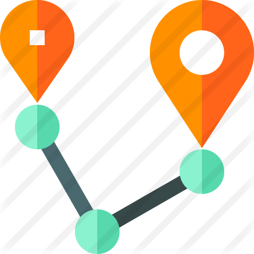

<ion-content padding>

  <p style="text-align: center; margin-top: 100px;">
    
    
  </p>
  <h4 style="text-align: center;">GeoTape</h4>

  <p style="text-align: center;margin-top: 50px;">
      <ion-button (click)="getCurrentPosition()">
          {{btnState}}
        </ion-button>

  </p>
  <p  style="text-align: center;margin-top: 50px;">
      {{distance}} metres

  </p>


  
    
   
</ion-content>
